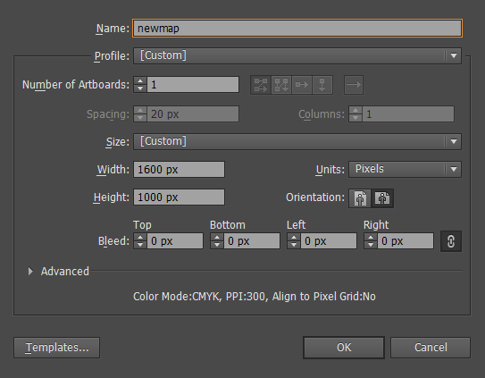
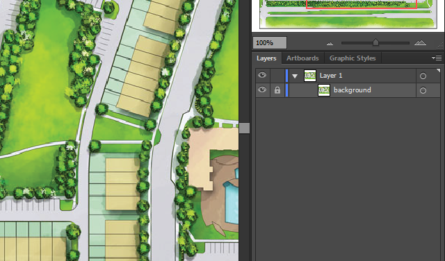
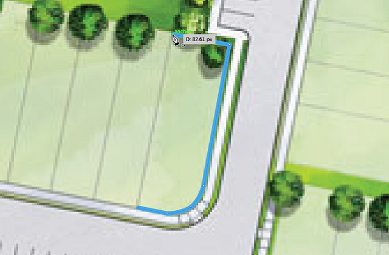
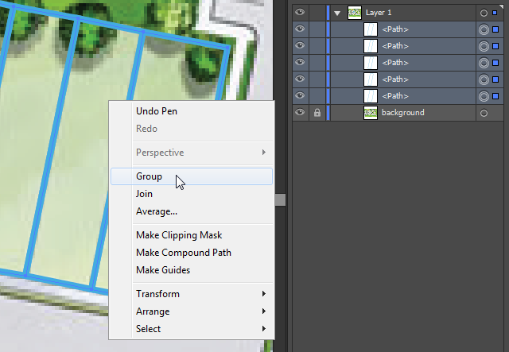
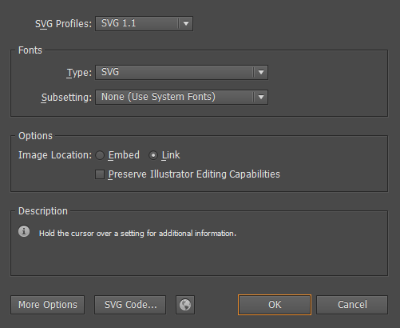
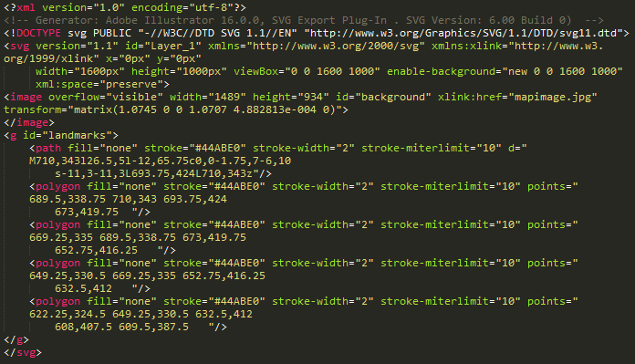
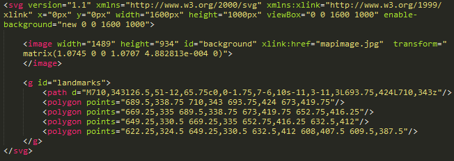
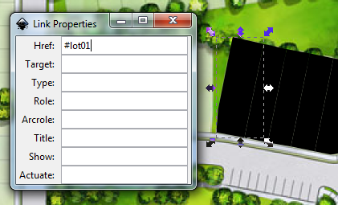
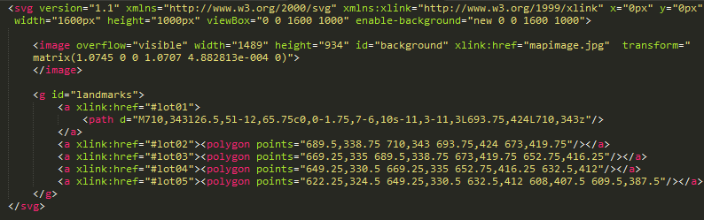
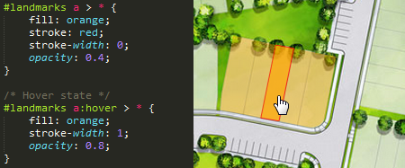

Mapplic is the ultimate plugin for creating custom interactive maps, using simple images (JPG/PNG) or vector graphics (SVG). It is available as a standard jQuery plugin or a WordPress plugin with admin interface. In the following, we will show you how you can easily create compatible vector maps (Scalable Vector Graphics) and use them with Mapplic (both versions). If you need further assistance, do no hesitate to contact support.
SVG or Scalable Vector Graphics is an XML-based vector image format (open standard) for two-dimensional graphics with support for interactivity and animation.
SVG files can be searched, indexed, scripted, and styled with CSS, just like HTML files. As XML files, SVG images can be created and edited with any text editor, but are more often created with drawing software.
In order to prepare an SVG file for Mapplic, you will have to use at least two tools: a drawing software and a text editor.
There are a few options, however these are the favored ones:
There are hundreds, from the simple Notepad and TextEdit to the advanced Notepad++ and Coda. It doesn't matter which one you are using, you will get the same result.
Sublime Text is our editor of choice, which is available for OS X, Windows and Linux.
Open Adobe Illustrator and create a new document. Give your document a name, make sure the Units is set to Pixels and choose the desired dimensions (width and height).
In most cases, there is and image to use as a pattern or vectorize. If you want to draw freely, feel free to skip this step.
To load an image into your newly created document, all you have to do is to drag&drop it to the artboard. Using the Free Transform Tool (E), you can scale and position the image according to your needs.
Locking the layer will ease drawing over the image. In order to keep your document organized, give your new layer a name. Giving the name background will make the layer have id="background" in the SVG file.
You can later delete this image, or keep it by embeding it into the SVG file.
It's time to use the pattern (or not, if you are drawing freely) and draw a shape over each landmark. The Rectangle and Ellipse tool can be used to draw basic shapes, but for more complex polyogns and curvy shapes, use the Pen Tool (P).
Don't worry about the stroke and fill colors, it can be manipulated with CSS.
Make sure you draw shapes and not just lines. To close the path, position the Pen tool over the first anchor point. A small circle appears next to the Pen tool pointer when it is positioned correctly. Click to close the path.
A semantic grouping of elements is important, it will help later with styling landmarks.
When you are done with drawing, saving the document is all what is left.
On the Save or Save As... dialog, set SVG (.SVG) as type. A new, SVG Options dialog will pop up.
If you go ahead and open the new SVG with a text editor, you will see something similar to this.
Unfortunately, drawing softwares like Adobe Illustrator often add unnecessary data to the file. Feel free to delete everything that is found before the opening svg tag. The fill, stroke and other styling attributes are also needless since we are going to use CSS for styling. This is the above example after applying a few simplifications.
The a (anchor) tag is used whenever we want to add a hyperlink on the world wide web, just like in the world of SVGs. The only difference is that the xlink namespace must be used. Insted of writing href="#location", you will have to write xlink:href="#location". Simple as that.
This can be done manually, using a text editor, however if you prefer clicking, adding links is natively supported in Inkscape.
Repeat these steps for each shape and save the documment.
The above example with links added should look like this when opened with a text editor:
Note the hrefs #lot01, #lot02 etc. When creating the landmarks, the unique IDs will be lot01, lot02 etc.
SVGs can be styled using Cascading Style Sheets just like plain HTML, which makes possible adding hover (roll over) styles. Explaining how CSS works is beyond the scope of this tutorial, you can find plenty of information on the web.
You can link your SVG styles anywhere in the page, you can even use the style element to add inline styling.
This is a basic styling example for the above example.
